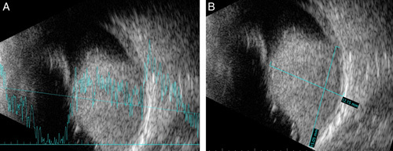
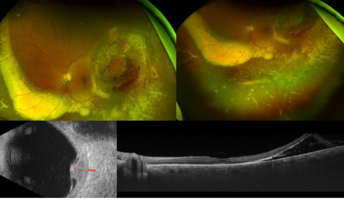
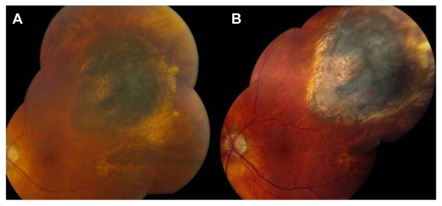

1441 — Bong võng mạc sau xạ trị u nội nhãn: thanh dịch do u, co kéo và lỗ rách của võng mạc đã xạ / Retinal detachment after intraocular tumour radiotherapy
Tags: pattern:bong-vong-mac pattern:bong-thanh-dich pattern:co-keo pattern:xuat-tiet-cung pattern:phu-hoang-diem pattern:teo-vong-mac pattern:tai-phat-u vung:vong-mac vung:hoang-diem vung:mat protocol:OCT protocol:sieu-am-B-scan protocol:UWF protocol:plaque-do-lieu protocol:PPV
Mức chắc chắn (certainty): tổng hợp y văn (literature synthesis) — đọc toàn văn một loạt 102 mắt cắt dịch kính sau plaque I-125 (PMC3589122), một ca Ru-106 80 Gy có chuỗi ảnh đa phương thức (PMC12359946), một ca bong lỗ rách che giấu u hắc mạc (PMC10617836), cộng dữ liệu biến chứng xạ của loạt 20 mắt retinoblastoma đặt plaque 45 Gy đã tổng hợp ở bài 1419. Phần chọn bóng chèn và thời điểm mổ là suy luận (inference) từ cơ chế + kết cục loạt, đã ghi rõ tại chỗ.
Vì sao bài này quan trọng: sau khi u nội nhãn được xạ trị, bong võng mạc (retinal detachment, RD) không phải một bệnh mà là bốn cơ chế khác nhau — thanh dịch do u còn hoạt động, rò lipid do mạch xạ, co kéo ở bờ u, và lỗ rách do võng mạc teo. Bốn cơ chế này trả lời bốn câu hỏi điều trị khác nhau (xạ lại u / anti-VEGF / mổ dịch kính / theo dõi), nhưng trên siêu âm và đáy mắt đều là “dịch dưới võng mạc”. Đọc sai cơ chế dẫn tới mổ khi u còn hoạt động hoặc chờ khi hoàng điểm đang bong. Bài này là phần tiếp theo bắt buộc của 1409/1419.
1. Tổng quan bệnh học – cơ chế hình ảnh – vì sao “dịch dưới võng mạc” có bốn nguồn gốc
1.1. Bốn cơ chế, một hình ảnh
Nguồn 1 — u còn hoạt động (exudative, u-related): melanoma hắc mạc tiết VEGF và cytokine viêm, làm vỡ hàng rào máu–võng mạc (blood–retinal barrier) và tăng tính thấm mao mạch u → dịch huyết tương vào khoang dưới võng mạc. Trước điều trị, bong thanh dịch gặp ở 50–100% mắt u hắc mạc (dẫn trong PMC3589122). Đặc điểm: dịch di chuyển theo tư thế (shifting fluid), không có lỗ rách, vòm dịch phủ trên khối u.
Nguồn 2 — rò lipid do mạch đã xạ (tumour-related lipid exudation, TRLE): sau xạ, mạch u và mạch hắc mạc bị viêm nội mô, huyết khối vi mạch, tăng tính thấm; protein và lipid thoát qua màng Bruch đã vỡ và RPE vào khoang dưới võng mạc. Lipid không được RPE tái hấp thu nhanh như nước → đọng thành xuất tiết cứng (hard exudates) và dịch dai dẳng. Đây là lý do “dịch + lipid” = rò mạn, khác “dịch trong” = rò cấp.
Nguồn 3 — co kéo (tractional): xạ gây viêm mạch, thiếu máu, xơ hóa ở bờ u và giao diện dịch kính–võng mạc; màng trước võng mạc co lại → bong hình máng, nếp cố định (fixed folds), không có lỗ. Trong loạt 102 mắt phải cắt dịch kính sau plaque, 67 mắt (65,7%) có co kéo dịch kính–võng mạc tại thời điểm mổ (PMC3589122).
Nguồn 4 — lỗ rách do võng mạc đã xạ (rhegmatogenous): võng mạc trong vùng xạ teo, mỏng, mất đàn hồi; kèm co kéo và thoái hóa dạng lưới → rách teo hoặc rách do co kéo, rồi dịch lỏng vào khoang dưới võng mạc. Thể này cần mổ, không đáp ứng thuốc.
Vì sao thời gian T1/T2 không giúp phân biệt: cả bốn thể đều là dịch protein thấp–trung bình trên MRI (T1 tối, T2 sáng); thứ phân biệt là hình thái trên OCT/B-scan + có/không có lỗ rách + khối u có hoạt động hay không. Đây là ví dụ của nguyên tắc: cùng một đậm độ/tín hiệu, hình thái và bối cảnh mới quyết định tên gọi.
1.2. Ngưỡng định lượng đã có (và chỗ còn trống)
| Tình huống | Con số | Ý nghĩa thực hành | Nguồn |
|---|---|---|---|
| Bong thanh dịch trước điều trị u hắc mạc | 50–100% | Bong có sẵn từ trước xạ ≠ biến chứng xạ | PMC3589122 |
| TRLE sau plaque I-125 | 13%, khởi phát trung bình 10 tháng | Rò lipid là biến chứng muộn, không phải ngay sau tháo plaque | dẫn trong PMC12359946 (Mills) |
| TRLE trong nghiên cứu bệnh–chứng | 8% | Yếu tố: vỡ Bruch, u dày, u gần đĩa thị/hoàng điểm, bong thanh dịch trước xạ | dẫn trong PMC12359946 (Mashayekhi) |
| Co kéo dịch kính–võng mạc ở mắt mổ sau plaque | 67/102 (65,7%) | Co kéo là thành phần thường gặp, không phải ngoại lệ | PMC3589122 |
| Khoảng plaque → cắt dịch kính | 38,1 tháng (3,8–178,6) | Bong do xạ thường muộn, trung bình hơn 3 năm | PMC3589122 |
| Bệnh võng mạc do xạ | 10–63%, khởi phát trung bình 25,6 tháng | Nền mạch máu quyết định cả phù và bong | dẫn trong PMC12359946 |
| Đục thể thủy tinh do xạ | 8–83% ở 5 năm | Che đáy mắt → buộc B-scan | dẫn trong PMC12359946 |
| Bệnh thần kinh thị do xạ | 16% | Giới hạn thị lực dù võng mạc gắn lại | dẫn trong PMC12359946 |
| Plaque I-125 45 Gy ở trẻ (retinoblastoma) | Bong võng mạc 20%, glôcôm tân mạch 5%, giữ mắt 70% | Trẻ có ngưỡng và biến chứng khác người lớn | PMC11901221 (bài 1419) |
| Cắt dịch kính sau plaque (102 mắt) | Thị lực 20/258 → 20/113 ở 12 tháng; 36,2% ≥ 20/50; 9,8% < 5/200 | Mổ có ích nhưng không phải “về 10/10” | PMC3589122 |
| Sau cắt dịch kính | Mổ lại 6,86%; bong thanh dịch tồn tại 2,94%; glôcôm tân mạch 8,8%; 0 mắt phải bỏ | Bong do xạ cứu được mắt, nhưng NVG là đích theo dõi | PMC3589122 |
- Chỗ còn trống: không có thử nghiệm ngẫu nhiên so sánh “mổ sớm vs chờ” ở bong do xạ; ngưỡng thời gian 6 tháng quan sát trước khi mổ là khuyến cáo thực hành nhằm loại trừ u còn hoạt động (PMC3589122), không phải bằng chứng cấp I.
1.3. Vì sao “bong do xạ” khác bong võng mạc thông thường
- Mô đã xạ không lành như võng mạc bình thường: mạch máu giòn, dễ chảy máu, biểu mô sắc tố teo, củng mạc mỏng sau khi plaque ép → mỗi lần can thiệp đều khó hơn và nguy cơ tái bong/PVR cao hơn.
- U vẫn nằm đó: mọi thao tác trong mắt có u đã xạ đều đặt câu hỏi gieo tế bào u vào dịch kính. Loạt 102 mắt không có phát tán trong/ngoài nhãn và không tái phát sau cắt dịch kính, nhưng 3 mắt có tế bào ác tính trong dịch kính trên xét nghiệm tế bào (PMC3589122) — nghĩa là nguy cơ có thật, dù thấp, và cần lấy mẫu dịch kính khi mổ.
- Thị lực phụ thuộc thời điểm, không phụ thuộc kỹ thuật: tế bào quang thụ chết sau vài tuần bong hoàng điểm; vì vậy bong đe dọa hoàng điểm là chỉ định mổ, còn bong ngoại vi không đe dọa có thể theo dõi.
2. Mẫu hình + chẩn đoán phân biệt theo thời gian và theo “u còn sống hay không” (Gamut)
2.1. Gamut theo mốc thời gian sau xạ
- Trước xạ: bong thanh dịch do u (50–100%), có thể rất lớn, che toàn bộ đáy mắt.
- 0–3 tháng: bong thanh dịch có thể nặng lên thoáng qua sau xạ (do phù/hoại tử u); đây là lúc dễ nhầm là thất bại điều trị.
- 3–12 tháng: TRLE khởi phát (trung bình 10 tháng), xuất tiết cứng, dịch dai dẳng; bắt đầu co kéo ở bờ u.
- 1–3 năm: bong co kéo, màng trước võng mạc, bệnh võng mạc do xạ; thời điểm cắt dịch kính trung bình 38,1 tháng.
- > 3–5 năm: teo võng mạc–hắc mạc, rách teo → bong lỗ rách, glôcôm tân mạch, đục thể thủy tinh; đồng thời nguy cơ tái phát u vẫn tồn tại.
2.2. Gamut theo hình thái — “4 chữ D”
- D1 — Detachment, serous (thanh dịch): dịch trong, di chuyển, không lỗ, phủ trên u; OCT: dịch dưới võng mạc không có màng co kéo, võng mạc trơn.
- D2 — Deposition, lipid (lắng đọng lipid): xuất tiết cứng dạng vòng/cung quanh u, dịch dai dẳng; OCT: dịch + hạt tăng phản xạ trong võng mạc; đây là dấu hiệu rò mạn.
- D3 — Distortion, tractional (co kéo): nếp cố định, màng trước võng mạc, dịch nông; OCT: màng tăng phản xạ trên võng mạc + điểm dính; B-scan: dải hồi âm mảnh.
- D4 — Defect, rhegmatogenous (lỗ rách): lỗ thấy được (thường ngoại vi, trong vùng xạ), dịch lỏng, có thể PVR; B-scan khi không thấy đáy mắt: màng rung theo động tác mắt, dày võng mạc.
2.3. Câu hỏi số 1 luôn là: “u còn hoạt động không?”
- U hoạt động: dày lên trên B-scan qua 3–6 tháng, bờ không đều, mất “melanoma hollow”, tăng tín hiệu mạch trên FA/ICGA, dịch tăng song song với u; xử trí là kiểm soát u (xạ lại/plaque thứ hai), không phải mổ dịch kính trước.
- U đã kiểm soát: mỏng đi, phẳng, tăng hồi âm/bờ rõ, dịch giảm dần dù có thể chậm; xử trí là anti-VEGF/steroid cho rò, mổ khi co kéo/lỗ rách.
- Ca minh họa (PMC12359946): u phẳng < 1 mm sau xạ lần 2 + aflibercept mỗi 8 tuần → hết dịch và lipid hoàn toàn, thị lực về 20/20 — chứng minh dịch do rò có thể hết mà không cần mổ.
3. Bảng so sánh phân biệt (ma trận đối chiếu)
| Thực thể (entity) | Hình ảnh/lâm sàng điển hình | Chốt vào (rule-in) | Chốt loại (rule-out) | Gợi ý xác nhận |
|---|---|---|---|---|
| Bong thanh dịch do u hoạt động | Dịch trong, di chuyển, phủ trên khối u; u dày lên theo thời gian | Dịch + u tăng độ dày ≥ 0,5 mm qua 3–6 tháng; mất hollow; tăng mạch trên FA/ICGA | U mỏng/phẳng, dịch giảm → không phải u hoạt động | B-scan 10–20 MHz đúng trục u; so ảnh cũ; FA/ICGA |
| TRLE do xạ (rò lipid) | Xuất tiết cứng quanh u, dịch dai dẳng, thị lực có thể còn tốt | Lipid dưới võng mạc/võng mạc + tiền sử vỡ Bruch, u dày, bong trước xạ; khởi phát quanh 10 tháng | Không có lipid, dịch tự hết → bong thoáng qua sau xạ | OCT (hạt tăng phản xạ), ảnh màu; theo dõi 4–8 tuần |
| Bong co kéo | Nếp cố định, màng trước võng mạc, dịch nông; thường bờ u | Màng tăng phản xạ + điểm dính trên OCT, dịch không di chuyển | Dịch di chuyển, không màng → thanh dịch | OCT qua u và bờ u; B-scan động |
| Bong lỗ rách do teo xạ | Lỗ ngoại vi trong vùng xạ, dịch lỏng, PVR; thị lực giảm nhanh nếu vào hoàng điểm | Thấy lỗ rách (soi đáy mắt/indentation) hoặc màng rung + lỗ trên B-scan | Không lỗ, vòm dịch trên u → thanh dịch/co kéo | Soi đáy mắt 3 gương; B-scan; cân nhắc OCT ngoại vi |
| Tràn dịch hắc mạc (choroidal effusion) sau xạ/viêm | Bong hắc mạc dạng vòm trơn, có thể hai bên, kèm bong thanh dịch; tiền phòng nông | Hắc mạc dày, vòm trơn, không ngấm thuốc, có yếu tố viêm/giảm áp | Khối hắc mạc đặc, ngấm thuốc → u | B-scan (vòm trơn), MRI; đáp ứng corticoid |
| Tái phát u “giả bong” | Khối đặc mới dưới võng mạc, có thể kèm dịch; xuất huyết dịch kính | Khối đặc tăng kích thước + hạt giống dịch kính; ngấm thuốc MRI | Chỉ dịch, không khối đặc → biến chứng xạ | B-scan định kỳ; MRI hốc mắt; hội chẩn ung thư |
| Bong lỗ rách + u hắc mạc cùng tồn tại (che giấu) | Bong lỗ rách che khối u ở đáy; thường không có tiền sử u | B-scan thấy khối vòm đặc dưới dịch; A-scan hồi âm trung bình–cao; lỗ rách ngoại vi | Chỉ thấy lỗ rách, không khối → bong thông thường | B-scan trước mọi ca bong lỗ rách không rõ nguyên nhân |

B-scan (A, B) của một nam 45 tuổi vào viện vì bong võng mạc lỗ rách một tháng: đáy mắt có bong dạng bọng phía dưới + rách móng ngựa ở 10 giờ, và dưới võng mạc bong là khối vòm đặc, hồi âm không đồng nhất kích thước 12,15 mm dày × 15,05 mm đáy, A-scan hồi âm trung bình–cao. Mô bệnh sau mổ: melanoma hắc mạc thể tế bào biểu mô, 15 phân bào/mm². Bài học: một lỗ rách không loại trừ u — B-scan là bắt buộc trước khi cắt dịch kính. Nguồn: Ann Med Surg 2023 (PMC10617836) Fig. 2, CC BY-NC-ND 4.0 — nguyên bản, không crop/ghép.4. Protocol chụp – điều trị – theo dõi
4.1. Bộ ảnh tối thiểu mỗi lần khám
- Ảnh đáy mắt siêu rộng (ultra-widefield, UWF) màu ± tự huỳnh quang: ghi ranh giới dịch, lipid, xuất huyết; so với ảnh cũ cùng góc.
- OCT hoàng điểm (SD-OCT): phân biệt dịch dưới võng mạc (SRF) vs dịch trong võng mạc (IRF) vs màng co kéo; đo độ dày trung tâm (CST), tìm đứt dải ellipsoid (EZ) — yếu tố tiên lượng thị lực.
- Siêu âm B-scan 10–20 MHz: đo độ dày u (mm), đường kính đáy, độ cao dịch, hồi âm trong u, tìm màng co kéo/lỗ rách khi đáy mắt bị che. Đây là chuẩn vàng theo dõi u sau xạ.
- A-scan: hồi âm trong u (melanoma trung bình–cao; hemangioma cao; lymphoma thấp) — dùng khi chưa có chẩn đoán mô học.
- FA/ICGA khi nghi u hoạt động hoặc cần phân biệt rò mạch; MRI hốc mắt khi nghi xâm lấn/xuyên củng mạc hoặc khối không giải thích được.
4.2. Liều và lịch theo dõi (khung thực hành)
- Liều đỉnh (apex dose) là biến số chính: ca Ru-106 dùng 80 Gy đỉnh (PMC12359946); plaque I-125 ở trẻ retinoblastoma dùng 45 Gy đỉnh (PMC11901221). Không có một con số “an toàn” chung — nguy cơ phụ thuộc thể tích võng mạc nhận liều, khoảng cách tới hoàng điểm/đĩa thị, và loại đồng vị.
- Lịch khám gợi ý: 1 tháng, 3 tháng, 6 tháng trong năm đầu; mỗi 4–6 tháng tới năm 5; hằng năm sau đó. Mỗi lần: UWF + OCT + B-scan; thêm FA/ICGA khi nghi tái phát.
- Cảnh báo sớm: dịch tăng + lipid mới = rò; dịch tăng + u dày = u hoạt động; nếp cố định = co kéo; lỗ mới = cần mổ.
4.3. Bậc thang điều trị
- Kiểm soát u trước: nếu u còn hoạt động → xạ lại/plaque lần hai (ca Ru-106 nhận 80 Gy lần hai, dung nạp củng mạc được đánh giá bởi xạ trị ung thư) hoặc chuyển phương thức (proton, enucleation nếu mất chức năng).
- Rò lipid/thanh dịch do xạ, u đã kiểm soát: anti-VEGF nội nhãn (bevacizumab/aflibercept), treat-and-adjust 4–8 tuần; dẫn qua tổng quan: bevacizumab sau tháo plaque cho hết bong 73%, trung bình 4 tháng; triamcinolone nội nhãn cho thoái triển 69% trong một nghiên cứu so sánh (dẫn trong PMC12359946). Corticoid nội nhãn phải cân nhắc nguy cơ tăng nhãn áp/đục thể thủy tinh (bài 1411).
- Bong đe dọa hoàng điểm hoặc co kéo/lỗ rách: cắt dịch kính (pars plana vitrectomy, PPV) ± bóc màng ± laser quanh u ± bóng chèn. Nguyên tắc: chờ u ổn định ít nhất 6 tháng trước khi mổ (PMC3589122), trừ khi hoàng điểm đang bong.
- Bóng chèn: khí C3F8 cho bong đơn giản, kỳ vọng hồi phục nhanh; dầu silicon khi PVR, bong tái phát, hoặc cần quan sát lâu — nhưng dầu che ảnh đáy mắt, phải theo dõi u bằng B-scan qua dầu. (Đây là suy luận từ cơ chế và kết cục loạt, không có thử nghiệm so sánh riêng ở mắt đã xạ.)
flowchart TD
A[Bệnh nhân sau xạ trị u nội nhãn có dịch dưới võng mạc] --> B[UWF + OCT + B-scan 10-20 MHz]
B --> C{U dày lên hoặc mất hollow so ảnh cũ?}
C -->|Có| D[U còn hoạt động: xạ lại hoặc đổi phương thức]
C -->|Không| E{Có màng co kéo hoặc lỗ rách?}
E -->|Có| F{Bong đe dọa hoàng điểm?}
F -->|Có| G[PPV + boc màng + laser + bóng chèn]
F -->|Không| H[Theo dõi 4-8 tuần; chụp lại OCT]
E -->|Không| I[Thanh dịch hoặc rò lipid do xạ]
I --> J[Anti-VEGF nội nhãn treat-and-adjust]
J --> K{Dịch hết sau 3 mũi?}
K -->|Có| L[Giãn khoảng, theo dõi tới 5 năm]
K -->|Không| M[Cân nhắc corticoid nội nhãn hoặc PPV nếu hoàng điểm đe dọa]
4.4. Ngưỡng theo dõi sau mổ
- Thị lực: loạt 102 mắt cho 20/258 → 20/113 ở 12 tháng, 36,2% đạt ≥ 20/50, 9,8% < 5/200 — tư vấn trước mổ phải nói rõ không phải ca nào cũng hồi phục.
- Nhãn áp: glôcôm tân mạch 8,8% sau PPV ở mắt đã xạ → đo IOP mỗi lần khám, soi góc khi IOP tăng; tân mạch cần anti-VEGF + PRP.
- Tái bong: mổ lại 6,86%, bong thanh dịch tồn tại 2,94% → hẹn OCT tháng 1–3–6–12 sau mổ, sau đó mỗi 6 tháng.
5. Biến thể bình thường và cạm bẫy
- Cạm bẫy 1 — “dịch dưới võng mạc = tái phát u”: dịch có thể do rò lipid/mạch xạ trong khi u phẳng < 1 mm; mổ/xạ lại lúc này là can thiệp thừa. Luôn so độ dày u và hollow trên B-scan.
- Cạm bẫy 2 — “dịch tự hết = u đã khỏi”: dịch có thể giảm thoáng qua rồi tăng lại do u hoạt động; theo dõi tối thiểu 5 năm vì biến chứng xạ và tái phát đều muộn.
- Cạm bẫy 3 — mổ quá sớm khi u chưa ổn định: nguy cơ gieo tế bào u (3/102 mắt có tế bào ác tính trong dịch kính) và không phân biệt được dịch do u với dịch do xạ; khuyến cáo chờ ≥ 6 tháng nếu hoàng điểm chưa bị đe dọa.
- Cạm bẫy 4 — bỏ sót lỗ rách vì “đã có u”: satisfaction of search; phải soi toàn chu vi 360° và B-scan động trước khi kết luận “chỉ bong thanh dịch”.
- Cạm bẫy 5 — không thấy đáy mắt vì đục thể thủy tinh: đục TTT do xạ 8–83% ở 5 năm; B-scan là bắt buộc trước khi kết luận “theo dõi ổn định”.
- Cạm bẫy 6 — củng mạc mỏng sau plaque: đặt đai/explants hoặc khâu củng mạc ở vùng đã xạ có nguy cơ thủng củng mạc; ưu tiên PPV + bóng chèn hơn đai củng mạc ở vùng xạ. (Suy luận từ cơ chế xạ — chưa có số liệu riêng.)
- Cạm bẫy 7 — dầu silicon che u: sau PPV + dầu, không đánh giá u bằng ảnh màu; dùng B-scan qua dầu và MRI khi cần.
6. Tự lượng giá — Blind Quiz (mở trên Pages để tự đoán trước)
Ca 1 — Nam 61 tuổi, theo dõi nốt hắc mạc 15 năm; nốt to lên 9 × 8,66 mm, dày 3,52 mm, có dịch dưới võng mạc. Ru-106 80 Gy đỉnh. Một tháng sau: bong thanh dịch phía dưới u + xuất huyết dưới võng mạc; 9 tháng sau dịch lan rộng, xuất tiết lipid nhiều, thị lực 20/40.

- Câu hỏi: Đây là bong thanh dịch do u hay do rò lipid? Có bằng chứng u còn hoạt động không? Bước tiếp theo là mổ hay điều trị nội nhãn?
Bấm để hiện đáp án
- Bong thanh dịch + rò lipid (TRLE), kèm u còn hoạt động: B-scan cho thấy u dày lên tới ~4 mm và vỡ màng Bruch mới; dịch lan xuống dưới với xuất tiết cứng — dấu hiệu rò mạn.
- Xử trí: xạ lại lần hai (80 Gy đỉnh) vì u còn hoạt động, aflibercept mỗi 8 tuần sau tháo plaque; không mổ dịch kính vì dịch do rò và u chưa kiểm soát.
- Kết cục: 6 tháng sau xạ lần hai, u phẳng < 1 mm, hết dịch và lipid, thị lực 20/20.
- Bài học: dịch + lipid không đồng nghĩa phải mổ; kiểm soát u + anti-VEGF có thể giải quyết.
- Nguồn ảnh: BMC Ophthalmol 2025 (PMC12359946) Fig. 3, CC BY-NC-ND 4.0 — nguyên bản.
Ca 2 — Nam 59 tuổi, melanoma hắc mạc sau cực (12 × 8,5 × 2,6 mm) đặt plaque I-125. 88 tháng sau: thị lực giảm, bệnh võng mạc do xạ, bong thanh dịch khu trú ngay trên hoàng điểm; u đã teo còn 9 × 8,5 × 1 mm, không hoạt động.

- Câu hỏi: Vì sao đây là chỉ định mổ? Cần làm gì để tránh gieo tế bào u? Kết quả mong đợi?
Bấm để hiện đáp án
- Chỉ định mổ: bong đe dọa hoàng điểm ở mắt u đã ổn định 88 tháng (teo, không hoạt động) — đúng nguyên tắc “chờ u ổn định rồi mới mổ”.
- Chống gieo tế bào: lấy mẫu dịch kính gửi tế bào học, hạn chế thao tác vào u, laser quanh u; loạt 102 mắt không có phát tán nhưng 3 mắt dương tính tế bào.
- Kết quả: PPV + phaco/IOL + bóc màng + laser + triamcinolone → 3 tháng thị lực 20/25, võng mạc gắn, không PVR; toàn loạt 36,2% đạt ≥ 20/50, 6,86% phải mổ lại.
- Nguồn ảnh: Clin Ophthalmol 2013 (PMC3589122) Fig. 7, giấy phép phi thương mại, nguyên bản.
Ca 3 — Nam 45 tuổi, mờ mắt trái 1 tháng, thị lực 20/250, không tiền sử cận thị/chấn thương. Đáy mắt: bong dạng bọng phía dưới + rách móng ngựa 10 giờ; dưới võng mạc bong có khối vòm nhạt màu.
- Câu hỏi: Có được kết luận “bong lỗ rách đơn thuần” và mổ ngay không? Cần thêm thông tin gì? Chẩn đoán mô học là gì?
Bấm để hiện đáp án
- Không: phải B-scan trước mổ — khối vòm đặc, hồi âm không đồng nhất, 12,15 mm dày × 15,05 mm đáy, A-scan hồi âm trung bình–cao → nghi melanoma hắc mạc dưới võng mạc bong.
- Xử trí: phaco/IOL + PPV + endolaser + dầu silicon; mô bệnh xác nhận melanoma thể tế bào biểu mô, 15 phân bào/mm², có xâm lấn thể mi.
- Bài học: một lỗ rách ngoại vi không loại trừ u; bỏ B-scan có thể dẫn tới mổ mà không biết u, gieo tế bào và bỏ lỡ điều trị ung thư.
- Nguồn ảnh: Ann Med Surg 2023 (PMC10617836) Fig. 2, CC BY-NC-ND 4.0 — nguyên bản.
Bài liên quan chéo
- 1419 – Bệnh võng mạc do xạ ở trẻ sau xạ trị u não/retinoblastoma (ngưỡng liều, OCT/OCTA, tái phát u)
- 1409 – Bệnh võng mạc do xạ sau xạ trị u nội nhãn/hốc mắt (người lớn, ngưỡng 45–55 Gy)
- 1418 – Phù hoàng điểm do xạ dai dẳng: chọn implant corticoid (khi kháng anti-VEGF)
- 1411 – Tăng nhãn áp do corticoid nội nhãn (theo dõi IOP khi dùng corticoid)
- 445 – Bong võng mạc (nguyên lý bong – lỗ rách – PVR)
- 1402 – Bong võng mạc sau viêm nội nhãn (bong do viêm: lỗ hoại tử vs màng xơ)
- 1415 – Bong võng mạc muộn ở mắt ROP đã hồi phục (bong do teo võng mạc đã can thiệp)
- 412 – U trong nhãn cầu (chẩn đoán phân biệt khối trong nhãn cầu)
Ảnh
- Tên file:
1441_bong-vong-mac-xa_<Modality>_<PMCID>.jpg; nguồn + giấy phép từng ảnh ởimages/CREDITS.md. - Cả ba ảnh dùng nguyên bản, không crop/ghép/đổi màu (có ảnh CC BY-NC-ND).
- Ảnh không tải được (paywall/cấm tải) → dẫn link trong
sources.md, không dùng ảnh license mơ hồ.
Không dùng để chẩn đoán độc lập khi chưa có người hướng dẫn.